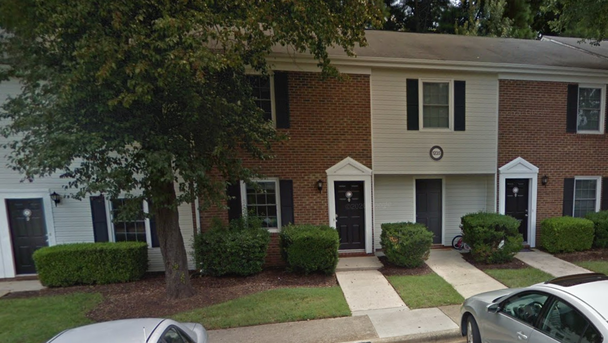

<!DOCTYPE html>
<html lang="en">
<head>
    <meta charset="UTF-8">
    <meta name="viewport" content="width=device-width, initial-scale=1.0">
    <title>Walnut Street 1973 and Present</title>

    <link rel="stylesheet" href="https://unpkg.com/leaflet@1.5.1/dist/leaflet.css"
   integrity="sha512-xwE/Az9zrjBIphAcBb3F6JVqxf46+CDLwfLMHloNu6KEQCAWi6HcDUbeOfBIptF7tcCzusKFjFw2yuvEpDL9wQ=="
   crossorigin=""/>

    <script src="https://unpkg.com/leaflet@1.5.1/dist/leaflet.js"
   integrity="sha512-GffPMF3RvMeYyc1LWMHtK8EbPv0iNZ8/oTtHPx9/cc2ILxQ+u905qIwdpULaqDkyBKgOaB57QTMg7ztg8Jm2Og=="
   crossorigin=""></script>

   <script src = "./data/geoJSONs.js"></script>

  


   <style type="text/css">
    body {
       margin: 0;
       padding: 0;
    }
    html, body, #map{
       width: 100%;
       height: 100%;
    }
  </style>
</head>
<body>
    <div id="map"></div>
    <script>
      var map = L.map('map').setView([35.765640, -78.754072], 16.0);
      
      var ND_popup = L.popup()
        .setContent("Nottingham Drive: <br> This road wasn't here in 1973.");
      
      

      
      
      var housePic = L.popup()
        .setContent("This is my old house! <br> ");
      
      var CookOut = L.popup()
        .setContent("CookOut Milkshakes! <br> ");
      
      var ND_WS = L.latLng(35.765262, -78.752047);

      var stopIcon = L.icon({
        iconUrl: 'https://schools.graniteschools.org/jeffersonjr/files/2020/04/a-bus-clipart-4.png',
        iconSize: [30,25],
        popupAnchor: [0,0]
      });
      
      var house = L.icon({
        iconUrl: 'https://cdn.imgbin.com/7/13/23/imgbin-computer-icons-house-house-dtQuDVMsH4cc6R50qinB4kzVY.jpg',
        iconSize: [40,40],
        popupAnchor: [0,0]
      });

    
      var WS_park_loop = L.geoJSON(WS_park_loop).addTo(map)
        .bindPopup("This is a nice loop for running! A lot of shade, too!")

      var WS_Cook_Out = L.geoJSON(WS_Cook_Out).addTo(map)
        .bindPopup(CookOut);

      var Nottingham_Dr = L.geoJSON(Nottingham_Dr).addTo(map)
        .bindPopup(ND_popup)
        .openPopup(ND_WS);
      
      var On_Ramp_US1S = L.geoJSON(On_Ramp_US1S).addTo(map)
        .bindPopup("This ramp was built while I lived here!");
      
      


      var WS1973 = L.tileLayer('./WS1973_tile/{z}/{x}/{y}.png', {
        minZoom: 13,
        maxZoom: 18,
        tms: false,
        attribution: 'Generated by TilesXYZ'
      }).addTo(map);

      var WS2013 = L.tileLayer('./WS2013_tile/{z}/{x}/{y}.png', {
        minZoom: 13,
        maxZoom: 18,
        tms: false,
        attribution: 'Generated by TilesXYZ'
      }).addTo(map);

      var myOldBusStop = L.marker( [35.765443, -78.748509], {icon: stopIcon}).addTo(map)
          .bindPopup("This is my old bus stop!");
      
      var WS_park_front = L.popup()
        .setContent("Walnut Street Park! (beautiful place, nice field and playground) <br> ");
      var WS_Park = L.marker( [35.764952, -78.752462]).addTo(map)
          .bindPopup(WS_park_front);
      
      var oldHouse = L.marker( [35.765334, -78.747245], {icon: house}).addTo(map)
        .bindPopup(housePic)
        .openPopup();
      
     

      var daTiles = {
        "Walnut Street 1973": WS1973,
        "Walnut Street 2013": WS2013
      };

      var daVectors = {
        "Walnut Street Park Loop": WS_park_loop,
        "Cook Out": WS_Cook_Out,
        "Nottingham Drive": Nottingham_Dr,
        "Ramp onto US 1 South": On_Ramp_US1S,
        "My Old Bus Stop": myOldBusStop,
        "Walnut Street Park": WS_Park
      };
      
      L.control.layers(daTiles, daVectors).addTo(map);
      
    </script>
</body>
</html>